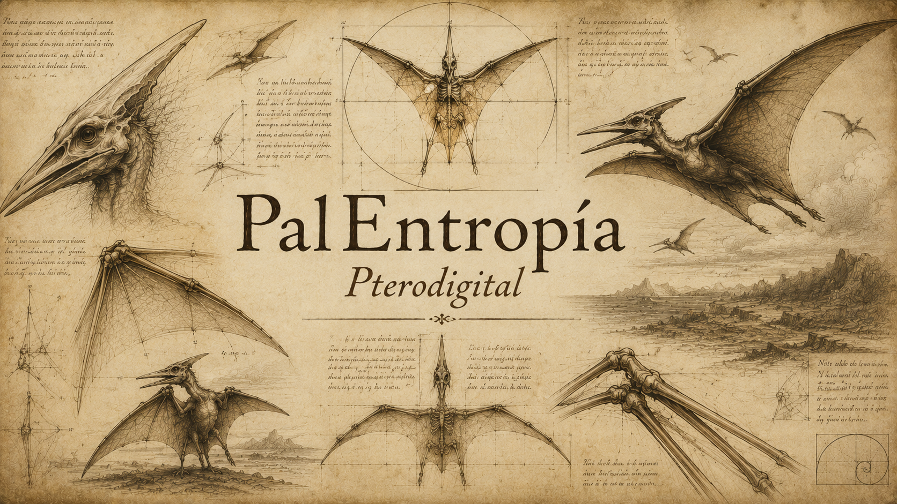
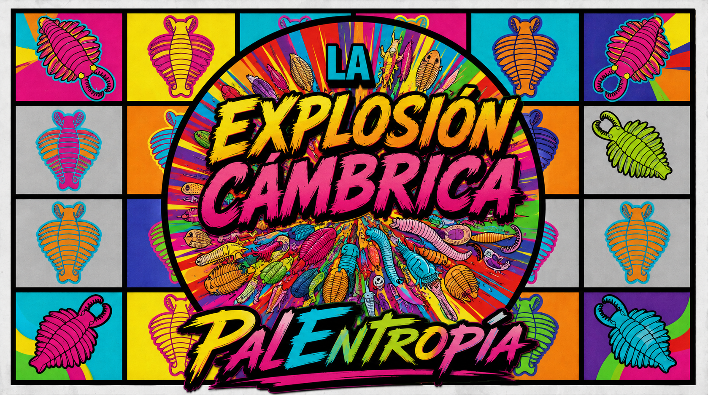
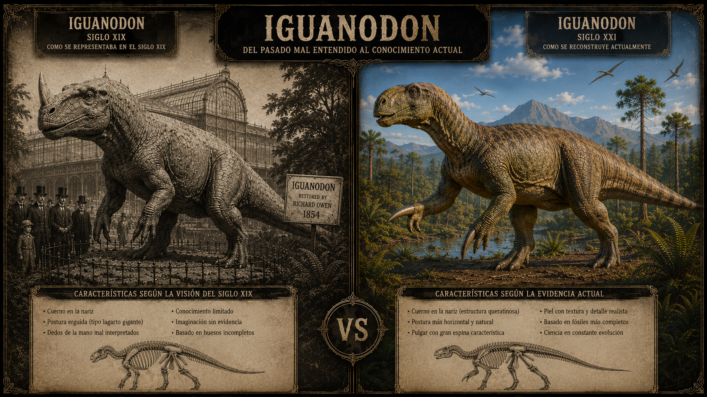
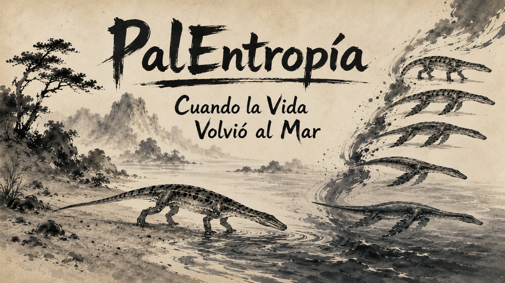
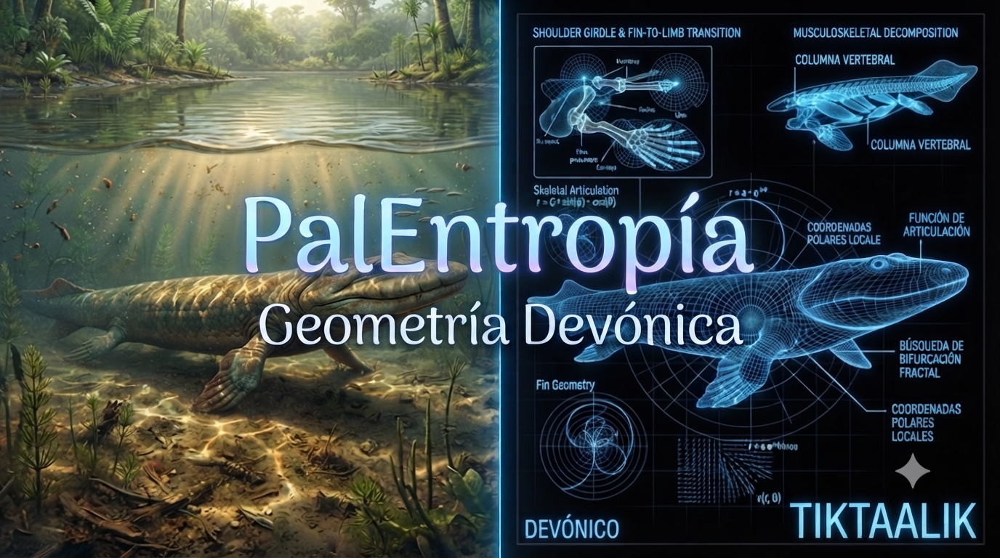
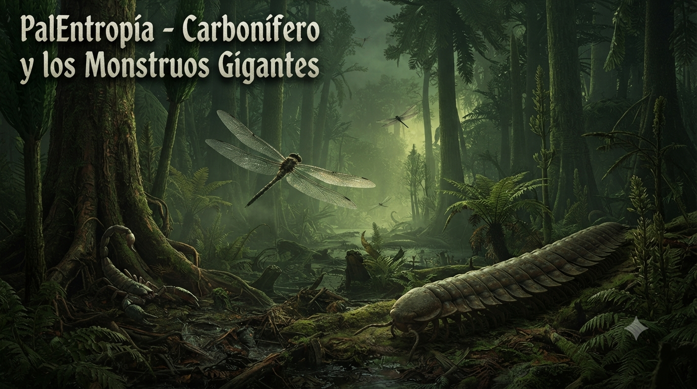

Pulsa sobre cualquier imagen para acceder directamente al vídeo.
🦕 Pterodigital

Pulsa sobre la imagen para ver el ensayo.
🌊 La Explosión Cámbrica

Pulsa sobre la imagen para ver el ensayo.
🎨 Render Victoriano

Pulsa sobre la imagen para ver el ensayo.
🐋 Cuando la vida volvió al mar

Pulsa sobre la imagen para ver el ensayo.
🔷 Geometría Devónica

Pulsa sobre la imagen para ver el ensayo.
🦐 Los Monstruos Gigantes

Pulsa sobre la imagen para ver el ensayo.